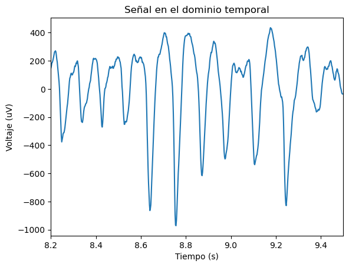
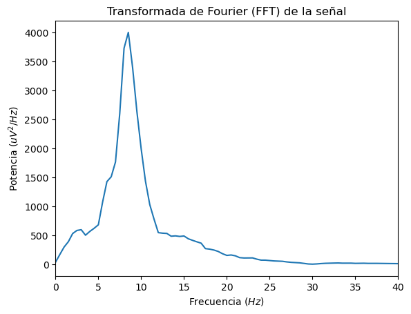
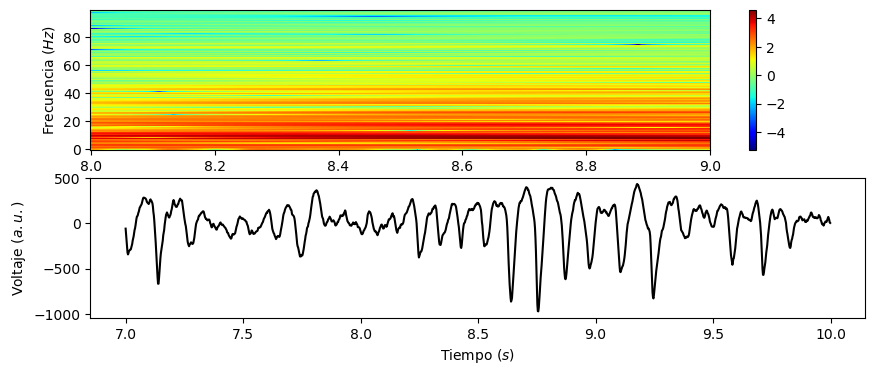
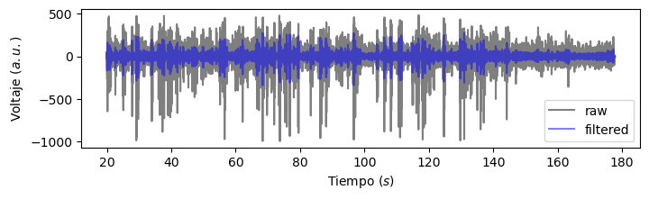
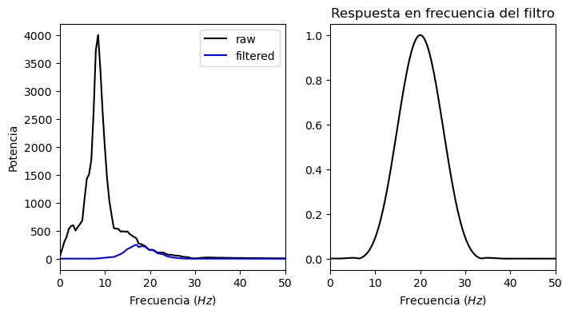
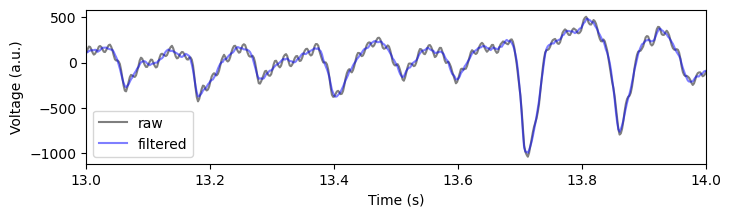
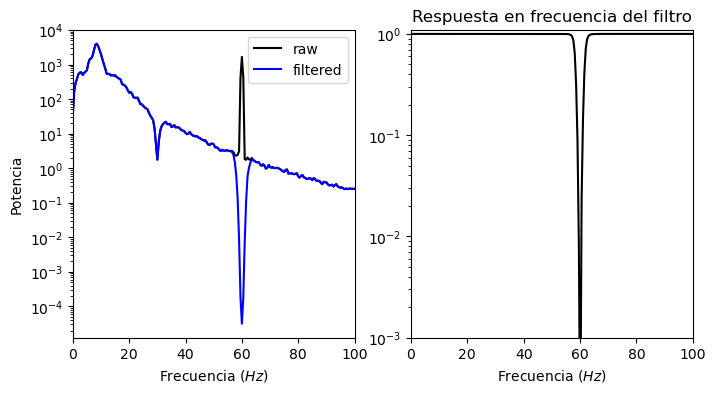
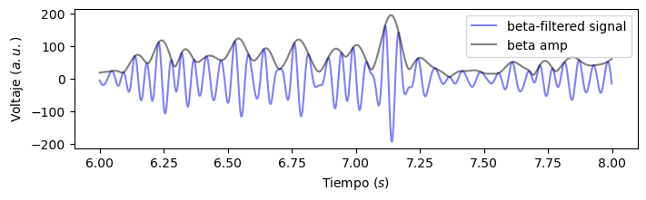
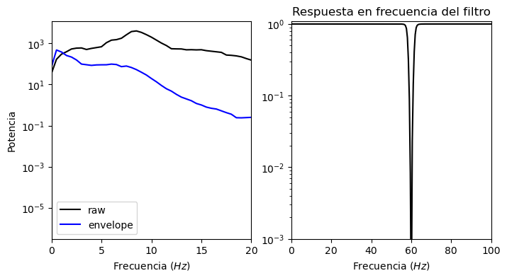
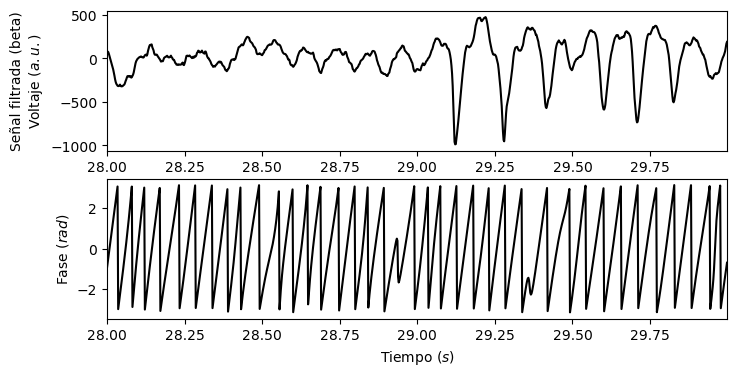

Práctico 8: Exploración de una oscilación neural#
Este práctico utiliza una muestra de voltaje de ejemplo (exampledata.npy) de una señal neural para demostrar algunos análisis simples de señales neuronales. Los análisis incluyen:
Visualizar las fluctuaciones de voltaje
Calcular y graficar el espectro de potencia
Calcular y graficar el perfil tiempo-frecuencia (espectrograma)
Filtrar la señal (filtros pasabanda)
Envolvente de amplitud de una oscilación
Serie temporal de fase de una oscilación
Comenzamos, como siempre, importando las librerías que vamos a utilizar:
import requests, io
import numpy as np
import scipy as sp
import matplotlib.pyplot as plt
Y cargamos los datos con los que vamos a trabajar:
url = 'https://raw.githubusercontent.com/MaestriaCienciasCognitivas/ncc/main/book/static/Practico8_ExampleData.npy'
response = requests.get(url)
response.raise_for_status()
# Datos de voltaje
x = np.load(io.BytesIO(response.content))
display(x[:5])
array([-65.74764947, -98.06352999, -87.74869648, -95.27286314,
-78.53870108])
# Número de muestras por segundo
Fs = 500
# Número de muestras
N = len(x)
# Duración de la señal, en segundos
tmax = N / Fs
# Creamos la variable de tiempo
t = np.arange(0, tmax, 1/Fs)
print(f"Tasa de muestreo: {Fs}")
print(f"Número de muestras: {N}")
print(f"Segundos registrados: {tmax}")
Tasa de muestreo: 500
Número de muestras: 88889
Segundos registrados: 177.778
Dominio temporal#
# Definimos una ventana temporal, en s
t_plot = [8.2, 9.5]
t_plot_idx = np.where(np.logical_and(t>=t_plot[0],t<t_plot[1]))[0]
# Graficamos los datos en la ventana temporal
plt.plot(t[t_plot_idx], x[t_plot_idx])
plt.xlabel('Tiempo (s)')
plt.ylabel('Voltaje (uV)')
plt.title('Señal en el dominio temporal')
plt.xlim(t_plot)
plt.show()

Densidad Espectral de Potencia (PSD)#
f, psd = sp.signal.welch(x, Fs, nperseg=1000, window='hann')
plt.plot(f, psd)
plt.xlim(0, 40)
plt.ylabel('Potencia ($uV^{2}/Hz$)')
plt.xlabel('Frecuencia ($Hz$)')
plt.title('Transformada de Fourier (FFT) de la señal')
plt.show()

Espectrograma#
# Definimos una ventana temporal
samp_spec = range(7 * Fs, 10 * Fs)
# Calculamos el espectrograma en esa ventana
f, t_spec, x_spec = sp.signal.spectrogram(x[samp_spec], fs=Fs, window='hann', nperseg=1000, noverlap=1000-1, mode='psd')
# Graficamos el espectrograma
fmax = 100
x_mesh, y_mesh = np.meshgrid(t_spec, f[f<fmax])
plt.figure(figsize=(10,4))
plt.subplot(2,1,1)
plt.pcolormesh(x_mesh+t[samp_spec[0]], y_mesh, np.log10(x_spec[f<fmax]), cmap=plt.cm.jet)#, vmin=vmin, vmax=vmax)
plt.ylabel('Frecuencia ($Hz$)')
plt.colorbar()
plt.subplot(2,1,2)
plt.plot(t[samp_spec],x[samp_spec],'k')
plt.xlabel('Tiempo ($s$)')
plt.ylabel('Voltaje ($a.u.$)')
plt.show()

Filtros#
Filtro pasabanda#
def bandpass_default(x, f_range, Fs, rmv_edge = True, w = 3):
"""
Default bandpass filter
Parameters
----------
x : array-like 1d
voltage time series
f_range : (low, high), Hz
frequency range for narrowband signal of interest
Fs : float
The sampling rate
rmv_edge : bool
if True, remove edge artifacts
w : float
Length of filter order, in cycles. Filter order = ceil(Fs * w / f_range[0])
Returns
-------
x_filt : array-like 1d
filtered time series
taps : array-like 1d
filter kernel
"""
# Default Ntaps as w if not provided
Ntaps = int(np.ceil(Fs*w/f_range[0]))
# Force Ntaps to be odd
if Ntaps % 2 == 0:
Ntaps = Ntaps + 1
# Compute filter
taps = sp.signal.firwin(Ntaps, np.array(f_range) / (Fs/2.), pass_zero=False)
# Apply filter
x_filt = np.convolve(taps,x,'same')
# Remove edge artifacts
N_rmv = int(Ntaps/2.)
if rmv_edge:
return x_filt[N_rmv:-N_rmv], Ntaps
else:
return x_filt, taps
# Aislamos la frecuencia en el rango beta (15-25Hz)
x_filt, bp_filt = bandpass_default(x,(15,25), Fs, rmv_edge=False)
# Graficamos el resultado
samp_plot = range(10000,88888)
plt.figure(figsize=(8,2))
plt.plot(t[samp_plot],x[samp_plot],'k',label='raw',alpha=.5)
plt.plot(t[samp_plot],x_filt[samp_plot],'b',label='filtered',alpha=.5)
plt.legend(loc='best')
plt.xlabel('Tiempo ($s$)')
plt.ylabel('Voltaje ($a.u.$)')
plt.show()

# Visualizamos el cambio en el espectro de la potencia
# Calculamos la respuesta en frecuencia del filtro
w, h = sp.signal.freqz(bp_filt)
f_bp = w/np.pi * Fs / 2.
amp_bp = abs(h)
# Calculamos el PSD de la señal filtrada
f_filt, psd_filt = sp.signal.welch(x_filt, Fs, nperseg=1000)
plt.figure(figsize=(8,4))
plt.subplot(1,2,1)
plt.plot(f,psd,'k',label='raw')
plt.plot(f_filt,psd_filt,'b',label='filtered')
plt.xlabel('Frecuencia ($Hz$)')
plt.ylabel('Potencia')
plt.xlim((0,50))
plt.legend(loc='best')
plt.subplot(1,2,2)
plt.plot(f_bp,amp_bp,'k')
plt.title('Respuesta en frecuencia del filtro')
plt.xlim((0,50))
plt.xlabel('Frecuencia ($Hz$)')
plt.show()

Filtro notch#
def notch_default(x, cf, bw, Fs, order = 3):
nyq_rate = Fs / 2.
f_range = [cf - bw / 2., cf + bw / 2.]
Wn = (f_range[0] / nyq_rate, f_range[1] / nyq_rate)
b, a = sp.signal.butter(order, Wn, 'bandstop')
return sp.signal.filtfilt(b, a, x), [b,a]
# Filtramos la señal en el rango 60 +/- 2 Hz
x_noise = x + np.sin(t*60*2*np.pi)*50
x_nfilt, notch_filtba = notch_default(x_noise, 60, 4, Fs)
# Graficamos el resultado
samp_plot = range(1200,14000)
plt.figure(figsize=(8,2))
plt.plot(t[samp_plot],x_noise[samp_plot],'k',label='raw',alpha=.5)
plt.plot(t[samp_plot],x_nfilt[samp_plot],'b',label='filtered',alpha=.5)
plt.xlim((13,14))
plt.legend(loc='best')
plt.xlabel('Time (s)')
plt.ylabel('Voltage (a.u.)')
plt.show()

# Calculamos la respuesta en frecuencia del filtro
w, h = sp.signal.freqz(notch_filtba[0],notch_filtba[1])
f_no = w/np.pi * Fs / 2.
amp_no = abs(h)
# Calculamos el PSD de la señal ruidosa
f_noise, psd_noise = sp.signal.welch(x_noise, Fs, nperseg=1000)
# Calculamos el PSD de la señal filtrada
f_filt, psd_filt = sp.signal.welch(x_nfilt, Fs, nperseg=1000)
plt.figure(figsize=(8,4))
plt.subplot(1,2,1)
plt.semilogy(f_noise,psd_noise,'k',label='raw')
plt.semilogy(f_filt,psd_filt,'b',label='filtered')
plt.xlabel('Frecuencia ($Hz$)')
plt.ylabel('Potencia')
plt.xlim((0,100))
plt.legend(loc='best')
plt.subplot(1,2,2)
plt.semilogy(f_no,amp_no,'k')
plt.title('Respuesta en frecuencia del filtro')
plt.xlim((0,100))
plt.ylim((.001,1.1))
plt.xlabel('Frecuencia ($Hz$)')
plt.show()

Envolvente de amplitud#
beta_amp = np.abs(sp.signal.hilbert(x_filt))
samp_plot = range(Fs * 6, Fs * 8)
plt.figure(figsize=(8,2))
plt.plot(t[samp_plot],x_filt[samp_plot],'b',label='beta-filtered signal',alpha=.5)
plt.plot(t[samp_plot],beta_amp[samp_plot],'k',label='beta amp',alpha=.5)
plt.legend(loc='best')
plt.xlabel('Tiempo ($s$)')
plt.ylabel('Voltaje ($a.u.$)')
plt.show()

# Calculamos el PSD de la envolvente
f_filt, psd_filt = sp.signal.welch(beta_amp, Fs, nperseg=1000)
plt.figure(figsize=(8,4))
plt.subplot(1,2,1)
plt.semilogy(f_noise,psd_noise,'k',label='raw')
plt.semilogy(f_filt,psd_filt,'b',label='envelope')
plt.xlabel('Frecuencia ($Hz$)')
plt.ylabel('Potencia')
plt.xlim((0,20))
plt.legend(loc='best')
plt.subplot(1,2,2)
plt.semilogy(f_no,amp_no,'k')
plt.title('Respuesta en frecuencia del filtro')
plt.xlim((0,100))
plt.ylim((.001,1.1))
plt.xlabel('Frecuencia ($Hz$)')
plt.show()

Serie temporal de fase#
beta_phase = np.angle(sp.signal.hilbert(x_filt))
samp_plot = range(14000,15000)
plt.figure(figsize=(8,4))
plt.subplot(2,1,1)
plt.plot(t[samp_plot],x[samp_plot],'k')
plt.xlim((t[samp_plot[0]],t[samp_plot[-1]]))
plt.ylabel('Señal filtrada (beta)\nVoltaje ($a.u.$)')
plt.subplot(2,1,2)
plt.plot(t[samp_plot],beta_phase[samp_plot],'k')
plt.xlim((t[samp_plot[0]],t[samp_plot[-1]]))
plt.xlabel('Tiempo ($s$)')
plt.ylabel('Fase ($rad$)')
plt.show()
